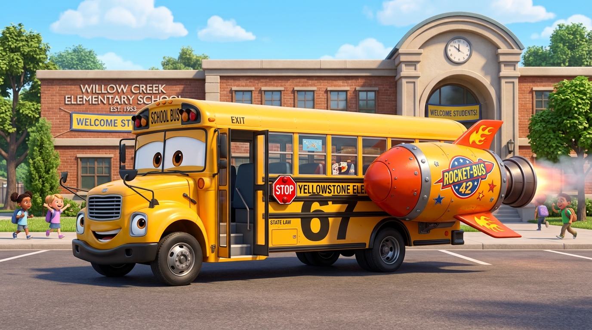
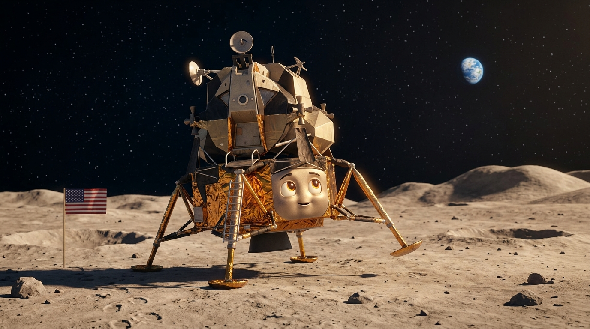
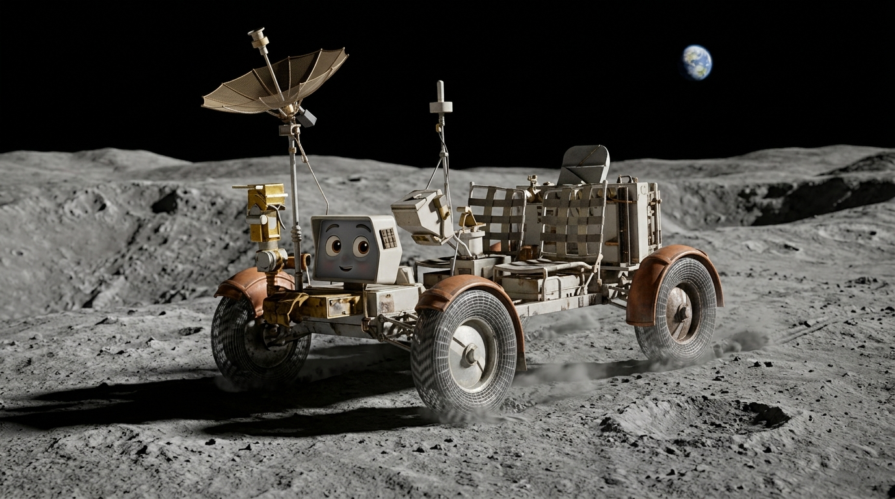
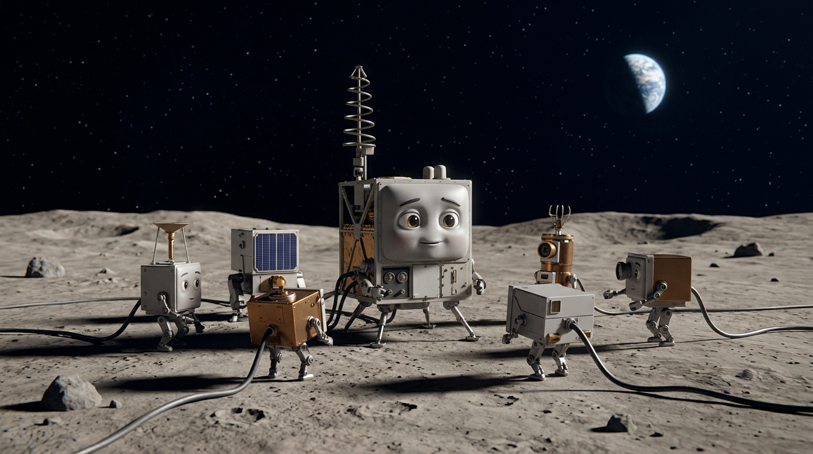
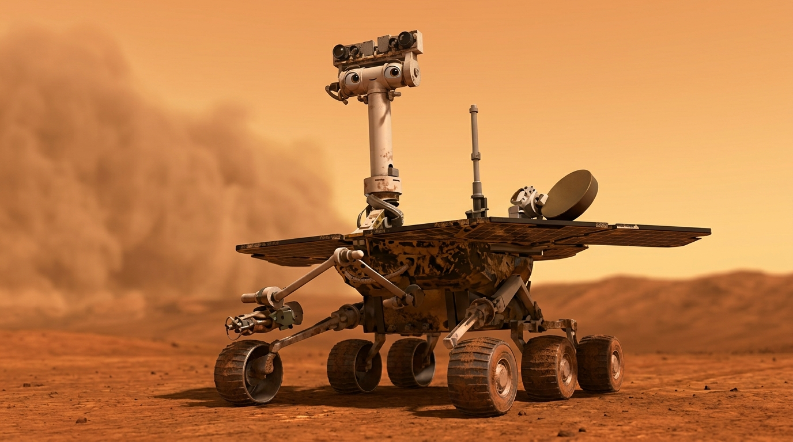
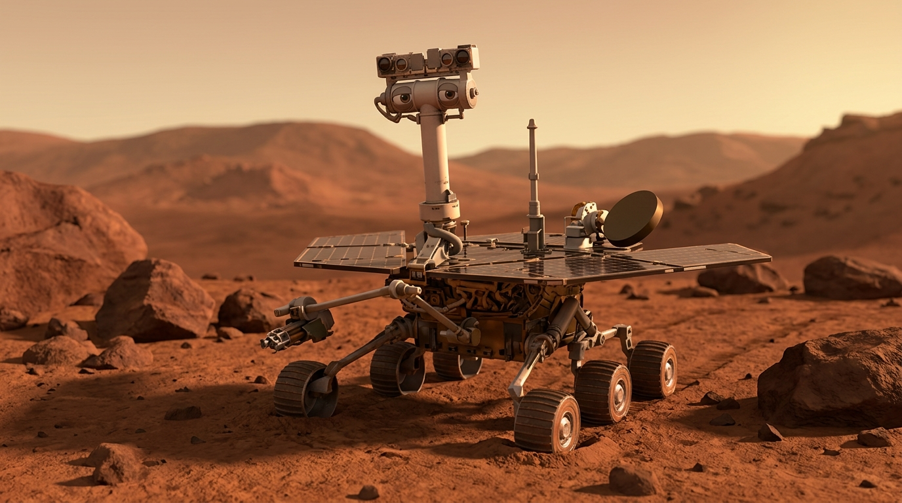
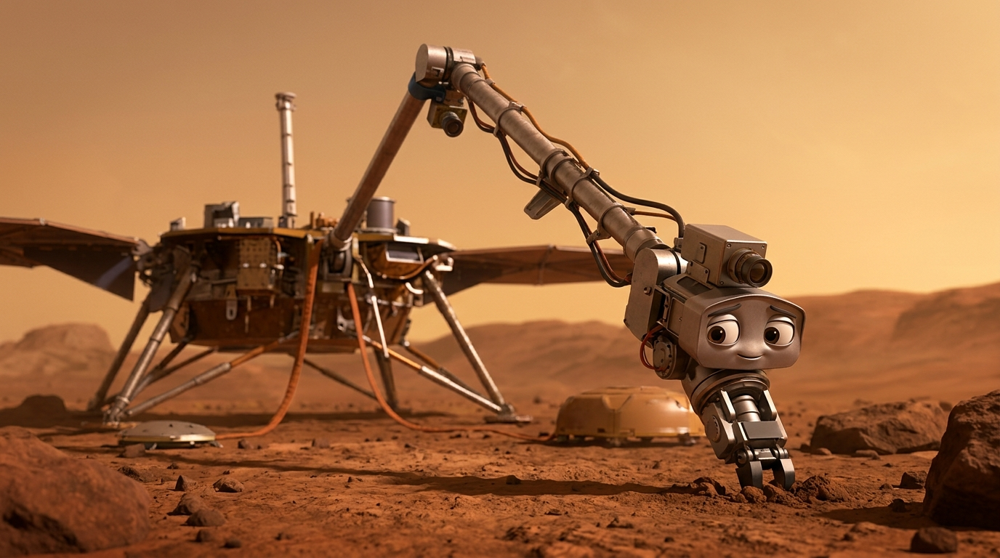

BUSSY 67!
Your school bus is leaving Earth.
Forgotten explorers are waiting beyond the sky.

TRAVELLING
TO THE MOON
Buckle up. Our first stop is a world where footprints last for millions of years.
APOLLO 11
EAGLE DESCENT STAGE
A pioneer that opened the door.
I was Eagle’s foundation—the part that carried Armstrong and Aldrin safely down to Tranquility Base on July 20, 1969.
Twenty-one hours later, they rose toward Columbia, leaving me behind.
Their journey home ended July 24.
Mine never did.
I remain where history touched the Moon.

CARTOON PLACEHOLDER

CARTOON PLACEHOLDER
APOLLO
LUNAR ROVING VEHICLE
Four wheels. One giant playground.
I was built to run where humans could barely walk.
On July 31, 1971, Apollo 15 sent me across the Hadley-Apennine terrain, carrying astronauts farther than any crew before me.
For three days, I rolled beneath Earth’s distant gaze.
Then the astronauts departed.
I stayed—and the tracks remained.
ALSEP
SCIENCE STATIONS
The Moon's quiet science team.
I was left behind to listen when the astronauts were gone.
My instruments felt moonquakes, measured heat, and studied the silent lunar environment.
Designed for roughly one year, I endured for years.
On September 30, 1977, NASA shut the ALSEP network down.
My instruments fell silent—but my data still speaks.

CARTOON PLACEHOLDER
TRAVELLING
TO MARS
The Moon is behind us. A red planet waits ahead, carrying stories written in dust.

CARTOON PLACEHOLDER
OPPORTUNITY
THE LITTLE ROVER THAT KEPT GOING
Curious. Adventurous. Still remembered.
I was promised ninety Martian days.
Instead, I crossed Mars for more than fourteen years, discovering evidence of ancient water beneath an alien sky.
Then, in June 2018, a planet-wide dust storm stole my sunlight.
My final communication reached Earth on June 10.
After that, silence became my legacy.
SPIRIT
THE DETERMINED EXPLORER
A quiet friend on a difficult world.
I arrived in Gusev Crater on January 4, 2004, built for ninety sols.
But I stayed for more than six years, crossing ancient terrain and finding evidence that water once shaped Mars.
My final communication came March 22, 2010.
Winter closed around me.
Yet my discoveries still move forward.

CARTOON PLACEHOLDER

CARTOON PLACEHOLDER
INSIGHT
ROBOTIC ARM
Calm hands, deep questions.
I was the hand of InSight—a 1.8-meter arm that lifted instruments from the lander and placed them upon Mars.
Together, we listened for marsquakes and studied the planet’s deep interior.
After more than four years, InSight sent its final communication on December 15, 2022.
My hand remains open to the Martian sky.
RETURNING
HOME
The engines turn toward Earth. But the stories we've met are coming with us.
THE JOURNEY
CONTINUES
They may have stopped moving, but their stories never stopped traveling.
Across the Moon and Mars, these forgotten machines still carry our curiosity forward.
They are not simply abandoned.
They are our footprints among the stars.